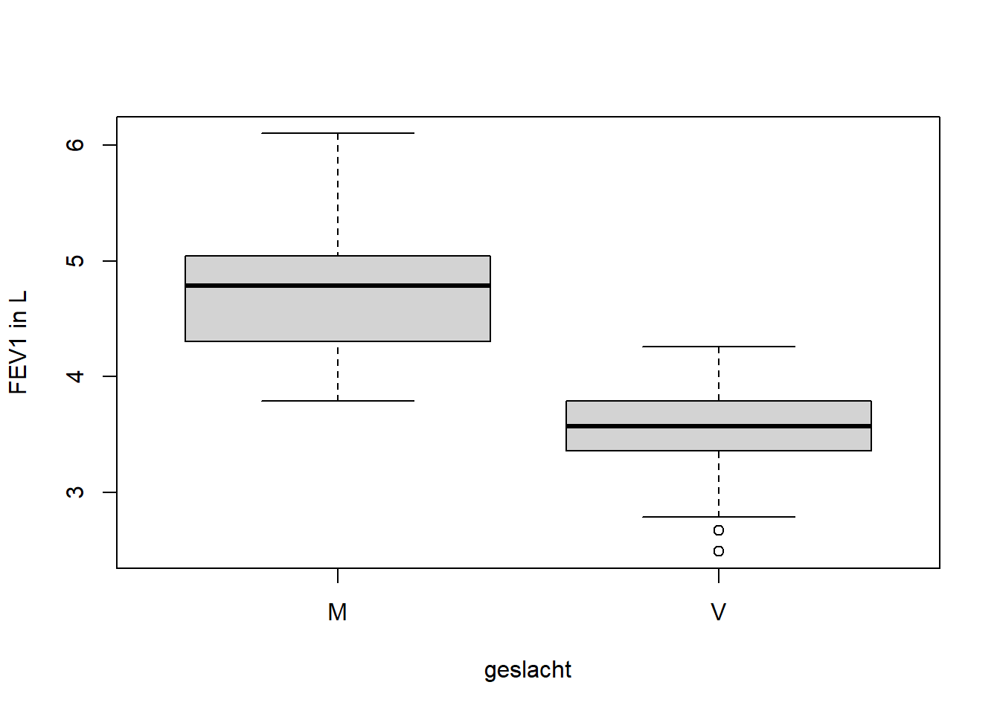

In het zelfstudie document is aan de hand van twee datasets een aantal toetsen behandeld: de z-toets, de t-toets en de chi-kwadraat toets. In dit COO komen deze toetsen opnieuw aan de orde, waarbij je gebruik maakt van dezelfde datasets.
In dit COO maken we gebruik van een aantal packages en functies in R. Voor het inlezen van bestanden en voor de beschrijvende statistiek zijn deze al geïntroduceerd in de COO’s over R. We verwijzen je naar deze COO’s wanneer je niet meer goed weet hoe deze functies werken. Voor de toetsen staat het benodigde R script in de betreffende vraag.
Zorg er voor dat je de benodigde databestanden hebt gedownload en lokaal hebt opgeslagen:
Het is ook handig om je ‘working directory’ te veranderen in deze map
met databestanden. Dit kun je doen via het menu: Session - Set Working
Directory - Choose Directory… of met code:
setwd("pathname"). Let op dat je in je pad geen backslash
(\) moet gebruiken maar of ‘forward slashes’ (/) of een dubbele
backslash. Let op, tijdens het instellen van je ‘working directory’ zie
je de bestanden meestal niet staan.
Verder maken we gebruik van functies uit de BSDA en de
psych packages. Als je die nog niet hebt geïnstalleerd, doe
dat nu (install.packages("BSDA") en
install.packages("psych")). Daarna kunnen we ze laden:
library(BSDA)
library(psych)In de zelfstudie is gekeken in hoeverre de FEV1 waarde van studenten verschilt van de FEV1 waarde van de Nederlandse populatie. We gebruiken hier hetzelfde voorbeeld en kijken stap-voor-stap hoe we de data kunnen beschrijven, en hoe we een z-toets en t-toets in R kunnen uitvoeren.
We beginnen met het inlezen van het bestand en dat bekijken. De data
staat in een .csv bestand spirometrie.csv. We lezen de data
in en noemen de data frame d en bekijken de eerste rows met
head.
d <-read.csv2("spirometrie.csv")head(d)## Student Geslacht Leeftijd Lengte Gewicht Teugvolume ERV IRV FVC
## 1 1 V 19 174 63 1.14 0.70 1.41 3.03
## 2 2 V 19 175 67 1.10 1.22 1.92 4.22
## 3 3 M 21 176 60 1.31 2.09 2.10 5.02
## 4 4 V 21 178 63 1.23 2.17 1.51 4.81
## 5 5 M 20 196 93 0.65 2.21 3.22 6.20
## 6 6 V 21 172 78 NA 1.65 1.51 4.36
## FEV1 verwachtFEV1
## 1 3.04 3.7980
## 2 2.49 3.8375
## 3 4.58 4.4690
## 4 3.95 3.9060
## 5 5.79 5.3580
## 6 3.91 3.6690Om te beginnen, zijn de data in een boxplot weergegeven. Hierin is een onderscheid gemaakt tussen mannen en vrouwen. Om deze boxplot te maken kun je onderstaande code gebruiken:
boxplot(FEV1 ~ Geslacht, data = d, ylab = "FEV1 in L", xlab = "geslacht")
Vraag 1. Wat is je conclusie op basis van deze boxplots? Vergelijk hierbij de boxplot van de mannen en vrouwen.
Vraag 2. Lees mediaan en interkwartielenafstand af voor de mannen en vrouwen. En schat op basis van de boxplot het gemiddelde en de standaard deviatie.
Om een gemiddelde FEV1 en standaarddeviatie voor mannen en vrouwen te krijgen, kunnen we een selectie uit de data maken voor mannen en vrouwen afzonderlijk en vragen om die kengetallen. Veel makkelijker: we kunnen de describeBy() functie gebruiken (we krijgen dan veel meer dan mean & SD):
describeBy(d$FEV1, group = d$Geslacht, skew = FALSE, IQR = TRUE)##
## Descriptive statistics by group
## group: M
## vars n mean sd min max range se IQR
## X1 1 36 4.77 0.58 3.79 6.1 2.31 0.1 0.73
## ------------------------------------------------------
## group: V
## vars n mean sd min max range se IQR
## X1 1 58 3.55 0.38 2.49 4.26 1.77 0.05 0.42Vraag 3. Komen de kengetallen die je in vraag 2 hebt afgelezen en geschat overeen met de berekende waarden?
Omdat de FEV1 waarden afhankelijk zijn van lengte en leeftijd, zijn
de gegevens eerst getransformeerd naar de verwachte FEV1 waarde aan de
hand van onderstaande formules. Deze variabele staat in de dataset als
verwachtFEV1 weergegeven.
Quanjer (1993)
Referentiewaarden
Vrouwen: verwachte FEV1 = 3.95H – 0.025A – 2.60
Mannen: verwachte FEV1 = 4.30H – 0.029A – 2.49
H = lengte in meters, A = leeftijd in jarenMaak ook van verwachtFEV1 een boxplot en
beschrijvende statistieken voor mannen en vrouwen
Vraag 4. Vergelijk nu ook de resultaten van de mannen en vrouwen. Zijn je conclusies hetzelfde als bij vraag 1?
We willen weten of de FEV1 van de studenten overeen komt met de FEV1 van de Nederlandse populatie. Om rekening te houden met lengte en leeftijd zijn verwachte FEV1 waardes berekend. Als de nulhypothese waar zou zijn (er is geen gemiddeld verschil), dan verwacht je dat gemiddeld genomen het verschil tussen de geobserveerde en de verwachte FEV1 0 is.
Bereken het verschil tussen de geobserveerde FEV1 en de verwachte FEV1.
Om een z- of t-toets te gebruiken, veronderstellen we dat de data normaal verdeeld zijn.
Maak de boxplots en histogrammen waarmee je kunt beoordelen in hoeverre je voldoet aan de aanname van normaliteit. Houd hierbij rekening met mogelijke verschillen in geslacht.
Naast deze plots, is het gebruikelijk om een ‘normal probability
plot’ te gebruiken voor het beoordelen van normaliteit van de data. Deze
plot is al geïntroduceerd in Oog voor Impact (voor opfrissen: (zie PSLS
hoofdstuk 11, paragraaf ‘Normal quantile plots’ en https://umcutrecht.mediamission.nl/Mediasite/Play/0e2109843156409ca053a07af8cca2e91d).
Om een normal probability plot te maken, gebruik je de functie
qqnorm. Voor de mannen:
d$verschil <- d$verwachtFEV1 - d$FEV1
qqnorm(d$verschil[d$Geslacht == "M"], main = "qqplot voor mannen")Maak ook een normal probability plot voor de FEV1 voor de vrouwen
Vraag 5. Wat is op basis van de gemaakte plots jouw conclusie ten aanzien van de normaliteti van de data?
In eerste instantie mag je veronderstellen dat de standaard deviatie
van de populatie bekend is, en wel gelijk aan 0.5. Verder
ga je er vanuit dat de data normaal verdeeld zijn. Je wil \(H_0:\mu = 0\) en \(H_1:\mu \neq 0\) toetsen.
In R is er in de package BSDA een z-toets beschikbaar.
Als je die nog niet hebt geïnstalleerd, doe dat nu met de functie
install.packages("BSDA"). Wil je de z-waarde uitrekenen in
R, dan gaat dit als volgt. Voor de mannen:
library(BSDA)
z.test(d$verschil[d$Geslacht == "M"],
sigma.x = 0.5,
alternative = "two.sided",
mu = 0,
conf.level = 0.95)Default in R is de waarde voor \(\mu\) gelijk aan 0. Ook
default wordt er een tweezijdig 95%-betrouwbaarheidsinterval geschat.
Dus mu = 0, alternative = c("two.sided"), conf.level = 0.95
is in het R script niet nodig om de toets te laten uitvoeren, maar is nu
voor de volledigheid wel vermeld.
Voer, zowel voor de mannen als voor de vrouwen afzonderlijk, een z-toets uit.
Vraag 6. Wat is je conclusie ten aanzien van de onderzoeksvraag?
In de vorige paragraaf hebben we aangenomen dat de populatie standaard deviatie bekend was. Met deze aanname konden we gebruik maken van een z-toets. In de praktijk kennen we deze populatie standaard deviatie meestal niet. Om dan een toets op het populatie gemiddelde te doen, maken we gebruik van een t-toets. Ook hier veronderstellen we dat de data normaal verdeeld zijn. Deze aanname hebben we in de vorige paragraaf al gecontroleerd.
De t-toets is onderdeel van de basis van R, je hebt hier geen aparte package voor nodig. Voor de mannen ziet het script er als volgt uit:
t.test(d$verschil[d$Geslacht == "M"],
mu = 0,
alternative = "two.sided",
conf.level = 0.95)Ook nu zijn de defaults mu = 0,
alternative = "two.sided" en
conf.level = 0.95.
Voer een t-toets uit voor zowel mannen als vrouwen.
Vraag 7. Verandert je conclusie ten aanzien van de nulhypothese voor mannen en vrouwen nu je een t-toets gebruikt? En als je conclusie verandert, kun je dan aangeven welke parameter hiervoor verantwoordelijk is?
In het databestand spirometrie staan ook de variabelen lengte en
gewicht. Bereken de BMI (gewicht [in kg])/(lengte [in m])\(^2\). De gemiddelde BMI voor volwassen
mannen is in Nederland 26.9 en voor volwassen vrouwen
26.6.
Vraag 8. Toets of de studenten gemiddeld genomen een lagere
BMI hebben dan de gemiddelde Nederlandse BMI. Houd hierbij rekening met
de variabele Geslacht. Gebruik het stappenplan voor
toetsen.
In de zelfstudie is er gekeken naar een onderzoek waarin werd onderzocht of er een relatie is tussen de ABO-bloedgroepen en infecties met corona (Ellinghaus et al, 2020, Genomewide Association Study of Severe Covid-19 with Respiratory Failure | NEJM). Ook met deze dataset ga je de analyse in R uitvoeren. We gebruiken hiervoor de oorspronkelijke dataset uit het artikel.
Maak deze dataset zelf aan in R met behulp van onderstaande code:
d <- matrix(c(398, 25, 65, 462, 377, 36, 71, 291), 4)
rownames(d) <- c("A", "AB", "B", "O")
colnames(d) <- c("controls", "cases")Om R de matrix als een frequentie tabel te laten zien, is er nog een extra stap nodig: gebruik hiervoor de functie as.table().
dtab <- as.table(d)
dtab## controls cases
## A 398 377
## AB 25 36
## B 65 71
## O 462 291Voor de interpretatie van de studie is het inzichtelijker om de frequenties niet als absolute, maar als relatieve (of procentuele) frequenties weer te geven.
Maak een tabel met relatieve frequenties met de volgende code:
dtab / sum(dtab)## controls cases
## A 0.23072464 0.21855072
## AB 0.01449275 0.02086957
## B 0.03768116 0.04115942
## O 0.26782609 0.16869565sweep(dtab, 1, margin.table(dtab, 1), "/")## controls cases
## A 0.5135484 0.4864516
## AB 0.4098361 0.5901639
## B 0.4779412 0.5220588
## O 0.6135458 0.3864542sweep(dtab, 2, margin.table(dtab, 2), "/")## controls cases
## A 0.41894737 0.48645161
## AB 0.02631579 0.04645161
## B 0.06842105 0.09161290
## O 0.48631579 0.37548387Vraag 9. Welke informatie krijg je met de verschillende relatieve frequenties die je kunt berekenen? Welke relatieve frequenties hebben jouw voorkeur bij de interpretatie?
Om de vraag van de onderzoekers te beantwoorden, voeren we een chi-kwadraat toets uit.
Vraag 10. Welke hypotheses formuleer je op basis van de onderzoeksvraag?
Voer een chi-kwadraat toets uit op de data met onderstaande code:
dtest <- chisq.test(dtab)
dtestdtest bevat alle resultaten van
chisq.test(dtab), waaronder ook de verwachte frequenties
onder de nulhypothese. Je kunt deze verwachte frequenties opvragen
met:
dtest$expectedVraag 11. Wat is op basis van je analyse je conclusie ten aanzien van de onderzoeksvraag (betrek hierbij ook de verwachte frequenties)?
Bij een kind met de genetische aandoening Progeria wordt het lichaam
snel ouder. Een groot deel van de kinderen met Progeria overlijdt jong,
in de tienerjaren, aan cardiovasculaire aandoeningen. In een klinische
studie wordt een aantal fysiologische variabelen, waaronder de
polsgolfsnelheid (PWV, Pulse Wave Velocity), onderzocht. De PWV wordt
vaak gebruikt als maat voor de vasculaire stijfheid, welke samenhangt
met de cardiovasculaire gezondheid van een individu. Wanneer de PWV
boven de 6.6 m/s komt, spreekt men van een abnormaal hoge
PWV. De onderzoekers vragen zich af of bij kinderen met Progeria deze
PWV waarde ook abnormaal hoog is. De onderzoekers hebben de volgende PWV
waarden gevonden:
## 18.8 17.6 17.5 16 17.8 14.1 13.7 13.1 12.9 12.9 12.4 10.1 9.3 9.1 8.3 8.3 7.9 7.2Doorloop het 4-stappenplan voor toetsen. Voer de analyse uit in R.
Vraag 11. Wat is je conclusie ten aanzien van de onderzoeksvraag?
Veel programma’s geven niet de mogelijkheid om aan te geven of je één- of tweezijdig toetst: de berekeningen zijn dan gebaseerd op een tweezijdige toets.
t.test(d, mu = 6.6, conf.level = 0.95)##
## One Sample t-test
##
## data: d
## t = 6.6825, df = 17, p-value = 3.855e-06
## alternative hypothesis: true mean is not equal to 6.6
## 95 percent confidence interval:
## 10.71328 14.50894
## sample estimates:
## mean of x
## 12.61111Vraag 12. Hoe kun je met dergelijke output dan toch éénzijdig toetsen?
In een paracetamol tablet zit – volgens de verpakking – 500 mg
paracetamol. Deze hoeveelheid paracetamol is een variabele, dat wil
zeggen, in een tablet zal nooit exact 500 mg paracetamol zitten. De
vraag is nu of de fabrikant van de tabletten doet wat er wordt beloofd.
Is de hoeveelheid paracetamol in een steekproef van tabletten gelijk aan
500 mg? In het bestand paracetamol.csv vind je metingen van
een practicum van een eerder studiejaar. Er zijn twee metingen met UV en
twee metingen met HPLC uitgevoerd. Als uitkomstvariabelen gebruik je het
gemiddelde van de twee UV metingen.
Doorloop het 4-stappenplan voor toetsen voor deze dataset. Voer de analyse uit in R.
Vraag 13. Wat is je conclusie ten aanzien van de onderzoeksvraag?